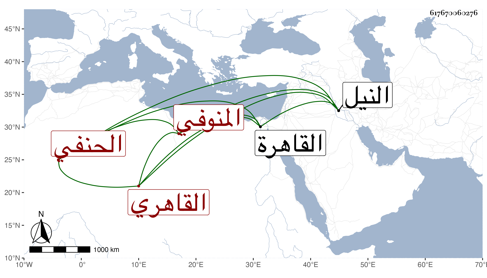

0902Sakhawi.DawLamic.ITO20230111-ara1.EIS1600.617670060276
Biography ID: 617670060276
208
محمد بن موسى بن محمد بن علي الشمس المنوفي ثم القاهري الحنفي أخو إبرهيم وأحمد الماضيين ويعرف كل منهم بابن زين الدين وهو خير الثلاثة وأكبرهم ممن يديم التلاوة ويحضر مع شيوخ تصوفه بالمؤيدية ابن الديري فمن يليه مع سكونه ومعر وإنكاره على أخيه إبرهيم في مخالطته للأمراء . مات على ظهر النيل في سفينة بعد الطاعون آخر سنة سبع وتسعين أو التي تليها وجيء به محمولا فدفن بالقاهرة رحمه الله .
